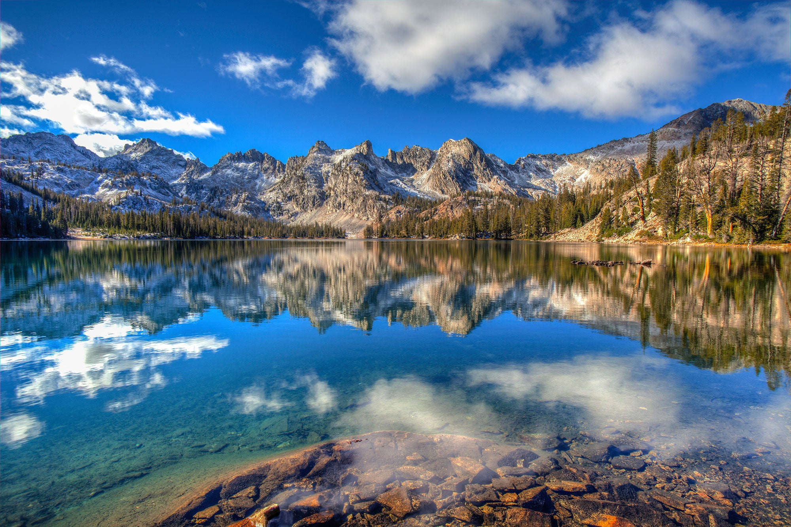

<!DOCTYPE html>
<html lang="en">
<head>
    <meta charset="UTF-8">
    <meta name="viewport" content="width=device-width, initial-scale=1.0">
    <link rel="stylesheet" href="wwr/styles/index.css"></link>
    <title>Document</title>
</head>
</html>
<header>
    <nav class="navigation">
        <a href="#">Home</a>
        <a href="wwr/">Rafting Website</a>
        <a href="wwr/site-plan-rafting.html">Rafting Site Plan</a>
        <a href="https://linkedin.com">linkedin</a>
        <a href="https://facebook.com">facebook</a>
    </nav>
</header>

<div class="grid">
<main>
    <h1>Bowen Rose | WDD 130</h1>
    <div class="section">
    
        <h2 style="position: absolute; top: 10px; right: 10px; background-color: rgb(255, 254, 254);"></h2>
        <p> Hello! My name is Bowen Rose and I am from Idaho Falls, Idaho. I enjoy playing disc golf with my friends. I am 17 years old an currently taking classes primarily from byui. I plan on going into a medical profession when I graduate. I have not yet graduated highschool but I will in 2025 Hello! My name is Bowen Rose and I am from Idaho Falls, Idaho. I enjoy playing disc golf with my friends. I am 17 years old an currently taking classes primarily from byui. I plan on going into a medical profession when I graduate. I have not yet graduated highschool but I will in 2025 Hello! My name is Bowen Rose and I am from Idaho Falls, Idaho. I enjoy playing disc golf with my friends. I am 17 years old an currently taking classes primarily from byui. I plan on going into a medical profession when I graduate. I have not yet graduated highschool but I will in 2025</p>
    </div>
<ul class="box">
    <li>
        <a href="https://www.churchofjesuschrist.org/temples/details/aba-nigeria-temple?lang=eng" target="_blank">Aba Nigeria Temple</a>
    </li>
    <li>
        <a href="https://www.churchofjesuschrist.org/temples/details/draper-utah-temple?lang=eng" target="_blank">Draper Utah Temple</a>
    </li>
    <li>
        <a href="https://www.churchofjesuschrist.org/temples/details/idaho-falls-idaho-temple?lang=eng" target="_blank">Idaho Falls Temple</a>
    </li>
</ul>
</main>
<aside class="box">
        
        <p class="aside-text">Idaho</p>
        <p>Idaho, known as the "Gem State," is located in the northwestern region of the United States. It is renowned for its stunning natural landscapes, which include mountains, forests, and rivers. The state's diverse geography is characterized by the Rocky Mountains in the east, the Snake River Plain in the south, and the beautiful lakes and rivers that traverse the land.

            The state capital, Boise, is the largest city in Idaho and serves as a cultural and economic hub. Boise boasts a vibrant arts scene, with numerous galleries, theaters, and museums. It is also known for its progressive urban amenities juxtaposed with the surrounding natural beauty.
            
            Idaho's natural resources are abundant, making agriculture a significant part of its economy.</p>
</aside>
</div>
<footer>
    <p>©2024 ⛰️ Bowen Rose ⛰️ Idaho Falls, Idaho</p>
</footer>
 <!-- Last modified: 2024-06-27 -->